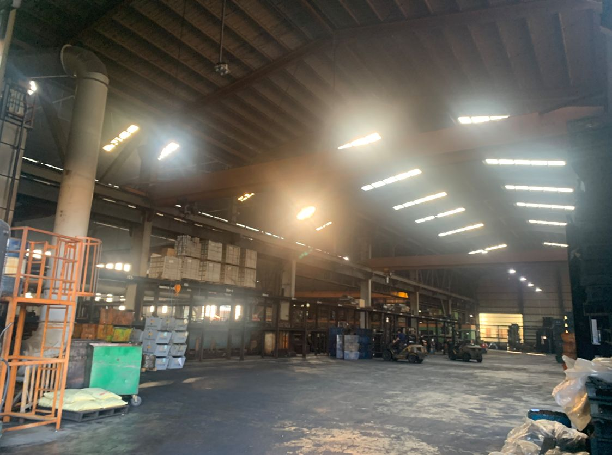
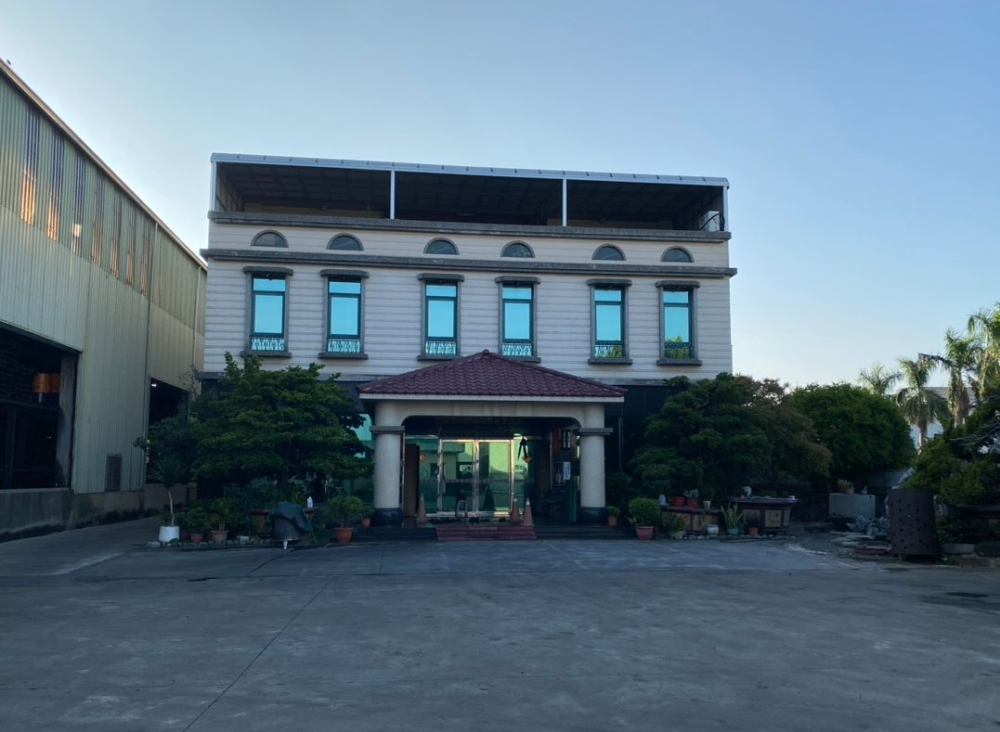
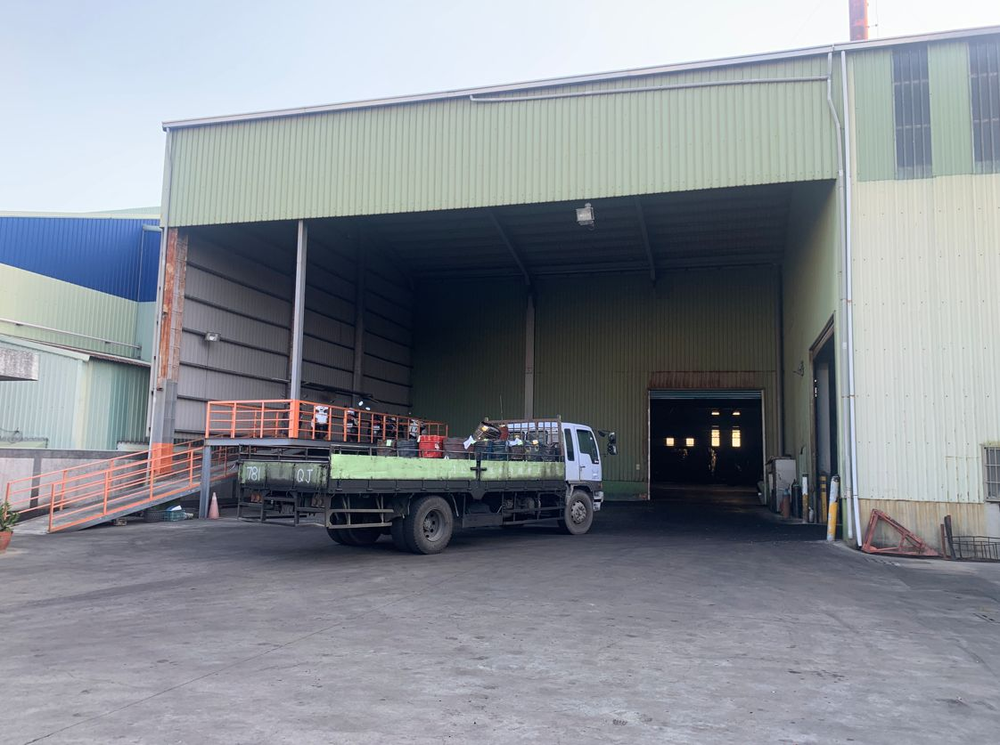
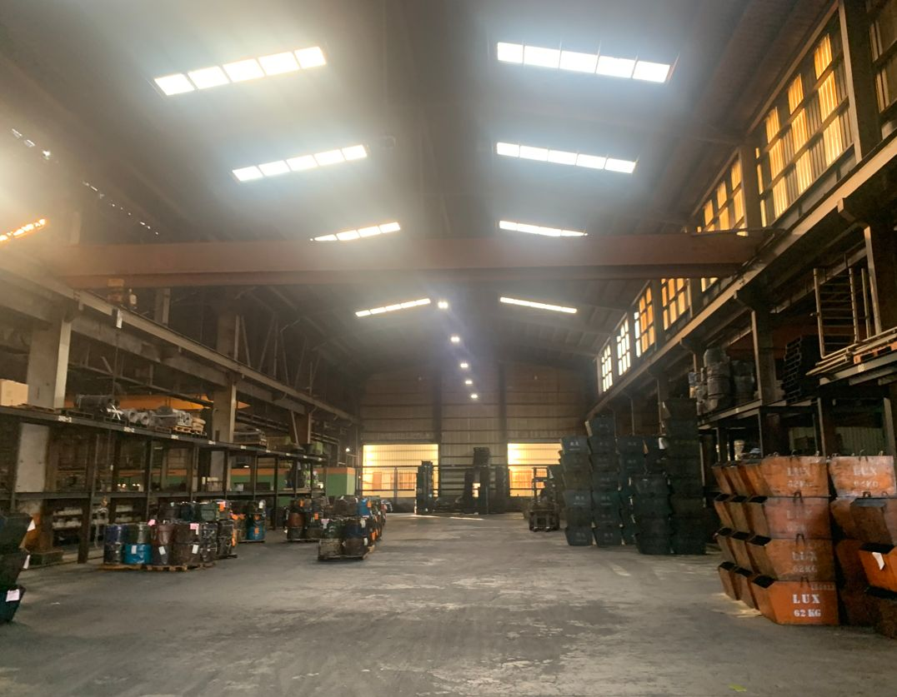

| 類別 | 大型廠房 |
|---|---|
| 編號 | IND-011 |
| 區域 | 高雄市永安區永工五路 |
| 價格 | 約10.77億元 （每地坪約33萬） |
| 使用分區 | 工業區/丁種建築用地 |
| 土地坪數 | 3262 |
| 建物坪數 | 115 |
| 備註 | 面寬約101米、深度約105米、臨路永工五路(10米)、天車*13、2370KW、滴水11米/14米、亦可租160萬(含稅)/月 |
洽詢：楊紘珉（富住通商用不動產 新興店）0905-858-141｜LINE 諮詢
相關物件：丁種建築用地、大型廠房・千坪工業地、廠房出租